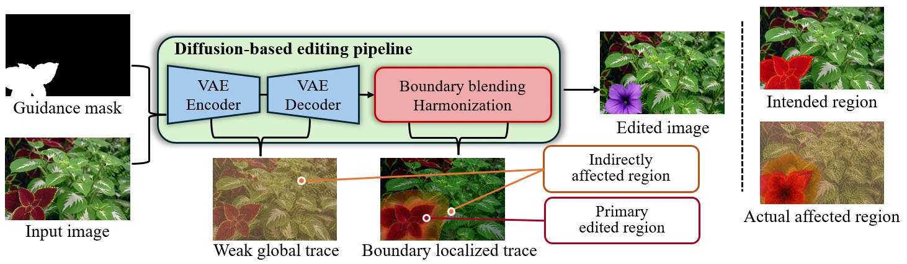
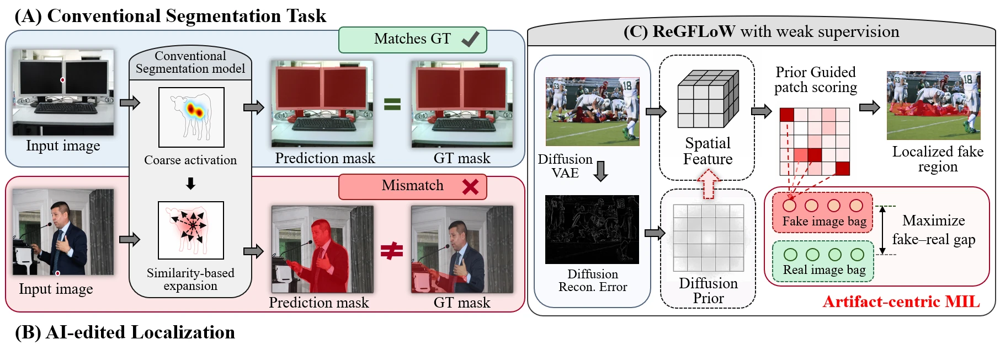
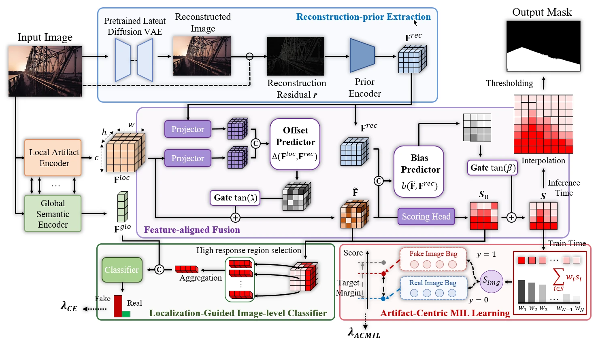
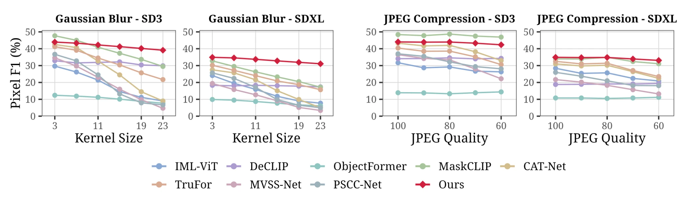
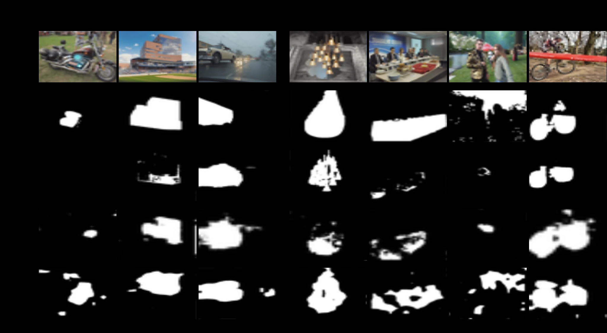

Annotate in detail.
Dense annotations provide explicit spatial targets for localization. But as data grows, producing these annotations becomes costly and difficult to scale.
Detailed labels · substantial annotation effortRethinking supervision for AI image forensics
What matters is not just how much we supervise,
but what our supervision tells the model.
01 / The changing annotation landscape
Dense annotations provide explicit spatial targets for localization. But as data grows, producing these annotations becomes costly and difficult to scale.
Detailed labels · substantial annotation effortWeakly supervised learning reduces this burden by learning spatial predictions from coarser labels, such as one real/fake label for an entire image.
Coarse labels · more accessible training dataMLLMs, VLMs, and other AI tools are changing how annotations can be produced. Even when dense labels become easier to obtain, are they necessarily the right training targets?
Label availability ≠ label suitabilityThe central question
Should we always prefer full supervision in the age of automatic annotation?
02 / The answer starts with the labels
In diffusion-based image editing, artifacts can extend beyond the intended edit area, meaning dense supervision can guide the model with misleading signals and hurt generalization. We introduce ReGFLoW, the first weakly supervised framework for diffusion-edited fake region localization, using only image-level real/fake labels while achieving stronger performance across unseen generators.
ReGFLoW is introduced as the first weakly supervised framework for diffusion-edited fake region localization in generic visual content. The strongest gains appear when evaluation includes both partially edited and fully synthetic images, and in cross-dataset transfer.

View full resolutionThe region we intended to edit.
Diffusion traces inside and outside that region.
Out-of-mask artifacts are trained as authentic.
Sometimes, less supervision can lead to better generalization.
Automatic annotation can change the cost of obtaining labels. It does not, by itself, resolve a mismatch between what a label represents and what the model needs to learn.
03 / Why a new formulation is needed
Removing pixel masks is not enough. Diffusion artifacts may be non-semantic, weakly bounded, and spatially diffuse—so object-based expansion and boundary-aligned pseudo-masks are not reliable defaults.

View full resolution ↗04 / The framework
Reconstruction-Guided Fake Localization under Weak supervision
ReGFLoW uses diffusion reconstruction cues to guide localization in both feature and score spaces, then learns artifact evidence with an artifact-centric MIL objective.

Explore the framework ↗A frozen diffusion VAE reconstructs the image, and the reconstruction error becomes a dense spatial prior for where artifact evidence may lie.
The reconstruction prior is fused with local features and also biases the patch logits, so the model is nudged toward transferable artifact cues rather than object boundaries.
Weak supervision is applied through a MIL objective that highlights suspicious patches and ranks fake-image evidence above real-image evidence.
The main paper introduces the framework at a high level. The appendix provides additional details on mask availability in real-world diffusion editing, auxiliary losses and inference calibration, implementation details, additional qualitative results, limitations, and related work.
For full equations, training details, and calibrated inference, please refer to the paper and appendix.
Localizing AI-edited regions is essential for interpretable forensic analysis, but remains challenging due to subtle and spatially distributed artifacts that are misaligned with semantic or object boundaries. Existing approaches rely on pixel-level supervision from controlled editing pipelines, which is difficult to scale and can introduce misleading signals: artifacts frequently extend beyond annotated regions, while out-of-mask pixels are treated as authentic. This limits models’ ability to capture transferable evidence and generalize across generators and datasets. To address these issues, we propose ReGFLoW, a Reconstruction-Guided Fake Localization framework under Weak supervision, which is the first weakly supervised approach for diffusion-edited fake region localization. ReGFLoW requires only real/fake labels at the image-level and uses diffusion reconstruction errors as dense spatial guidance to inject them into both feature and score spaces. Furthermore, by artifact-centric multiple instance learning, ReGFLoW utilizes localized diffusion evidence without relying on semantic-affinity or boundary-based pseudo-mask priors. Extensive experiments show competitive cross-generator localization, while ReGFLoW outperforms all evaluated fully supervised baselines when evaluation includes both partially edited and fully synthetic images and in cross-dataset tests, without target-domain adaptation.
Original abstract ↗05 / Evidence, not just an intuition
Train on SD1.5 and evaluate on unseen generators and datasets. ReGFLoW never uses pixel-level training masks or target-domain adaptation.
Table 1 / OpenSDID · P setting
ReGFLoW achieves 38.6 OOD average F1, outperforming the adapted weakly supervised baselines and several fully supervised methods. On Flux.1 it obtains 29.2 F1, compared with MaskCLIP’s 18.4. MaskCLIP retains the best P-setting OOD average F1 (41.7); ReGFLoW does not lead every generator or metric.
| Method | In-domain | Cross-domain | Average | |||||||||||
|---|---|---|---|---|---|---|---|---|---|---|---|---|---|---|
| SD1.5 | SD2.1 | SDXL | SD3 | Flux.1 | Avg. | OOD Avg. | ||||||||
| F1 | IoU | F1 | IoU | F1 | IoU | F1 | IoU | F1 | IoU | F1 | IoU | F1 | IoU | |
| Fully supervised methods | ||||||||||||||
| PSCC-Net[52] | 64.2 | 54.7 | 44.8 | 36.7 | 26.1 | 19.7 | 37.3 | 29.3 | 11.6 | 8.2 | 36.8 | 29.7 | 29.9 | 23.5 |
| TruFor[19] | 71.0 | 63.4 | 61.9 | 54.7 | 31.9 | 26.5 | 38.5 | 32.2 | 9.7 | 7.6 | 42.6 | 36.9 | 35.5 | 30.3 |
| IML-ViT[18] | 73.6 | 66.5 | 50.6 | 44.8 | 26.0 | 21.5 | 28.3 | 23.6 | 7.9 | 6.1 | 37.3 | 32.5 | 28.2 | 24.0 |
| MaskCLIP[9] | 75.8 | 68.6 | 63.2 | 56.1 | 35.2 | 29.5 | 49.8 | 42.7 | 18.4 | 14.8 | 48.5 | 42.4 | 41.7 | 35.8 |
| Weakly supervised methods | ||||||||||||||
| WSCL[21] | 25.6 | 16.7 | 25.9 | 17.0 | 26.0 | 17.0 | 25.4 | 16.5 | 25.3 | 16.4 | 25.6 | 16.7 | 25.7 | 16.7 |
| DOLOS[22] | 21.5 | 13.4 | 19.1 | 11.9 | 19.8 | 12.2 | 20.3 | 12.5 | 19.2 | 12.0 | 20.0 | 12.4 | 19.6 | 12.2 |
| BoxPromptIML[44] | 11.5 | 7.0 | 10.9 | 6.5 | 10.9 | 6.6 | 13.8 | 8.4 | 10.3 | 6.2 | 11.5 | 6.9 | 11.5 | 6.9 |
| ReGFLoW(Ours) | 49.3 | 36.9 | 46.3 | 33.8 | 34.9 | 23.6 | 43.9 | 30.9 | 29.2 | 19.0 | 40.7 | 28.8 | 38.6 | 26.8 |
Table 2 / OpenSDID · P+F setting
When both training and evaluation include partially edited and fully synthetic fake images, ReGFLoW achieves the highest OOD average F1: 31.3. It exceeds all evaluated fully supervised baselines in OOD average, despite using no pixel-level labels. This is an OOD result, not a claim of the best in-domain or overall average score.
| Method | In-domain | Cross-domain | Average | ||||
|---|---|---|---|---|---|---|---|
| SD1.5 | SD2.1 | SDXL | SD3 | Flux.1 | Avg. | OOD Avg. | |
| Fully supervised methods | |||||||
| TruFor[19] | 28.8 | 20.1 | 15.9 | 16.4 | 8.4 | 17.9 | 15.2 |
| IML-ViT[18] | 30.2 | 24.7 | 17.6 | 13.5 | 7.7 | 18.7 | 15.9 |
| MaskCLIP[9] | 95.1 | 73.2 | 20.8 | 17.7 | 4.8 | 42.3 | 29.1 |
| Weakly supervised methods | |||||||
| ReGFLoW(Ours) | 35.6 | 33.4 | 30.1 | 32.2 | 29.4 | 32.2 | 31.3 |
Table 3 / Cross-dataset evaluation
ReGFLoW obtains the highest F1 in all three reported cross-dataset settings: COCO-GLIDE (P), DOLOS (P), and DOLOS (P+F). These tests extend the evaluation beyond OpenSDID to different generation and content distributions.
06 / Understanding the evidence
Image-level detection, module ablations, and source-domain diversity provide complementary evidence for reconstruction-guided weak supervision.
Table 4 / Image-level detection
By combining high-response regions with a global image embedding, ReGFLoW achieves 76.22 OOD F1 and 80.93 OOD accuracy—the highest averages among the evaluated detectors.
| Method | In-domain | Cross-domain | Average | |||||||||||
|---|---|---|---|---|---|---|---|---|---|---|---|---|---|---|
| SD1.5 | SD2.1 | SDXL | SD3 | Flux.1 | Avg. | OOD Avg. | ||||||||
| F1 | ACC | F1 | ACC | F1 | ACC | F1 | ACC | F1 | ACC | F1 | ACC | F1 | ACC | |
| CNNDet[54] | 84.60 | 85.04 | 71.56 | 75.94 | 59.70 | 68.72 | 56.27 | 67.08 | 35.72 | 57.57 | 61.57 | 70.87 | 55.81 | 67.33 |
| GramNet[55] | 80.51 | 80.35 | 74.01 | 76.66 | 65.28 | 70.76 | 64.35 | 70.29 | 52.00 | 63.37 | 67.23 | 72.29 | 63.91 | 70.27 |
| FreqNet[56] | 75.88 | 77.70 | 60.97 | 68.37 | 53.15 | 64.02 | 53.50 | 64.37 | 38.47 | 57.08 | 56.39 | 66.31 | 51.52 | 63.46 |
| NPR[57] | 79.41 | 79.28 | 81.67 | 81.84 | 72.12 | 74.28 | 73.43 | 75.47 | 67.62 | 71.36 | 74.85 | 76.45 | 73.71 | 75.74 |
| TruFor[19] | 90.12 | 97.73 | 35.93 | 55.62 | 58.04 | 66.41 | 59.73 | 67.51 | 49.12 | 61.62 | 58.59 | 69.78 | 50.70 | 62.79 |
| IML-ViT[18] | 94.47 | 75.73 | 69.70 | 61.19 | 40.98 | 49.95 | 44.69 | 51.25 | 18.20 | 43.62 | 53.61 | 56.35 | 43.39 | 51.50 |
| MaskCLIP[9] | 91.28 | 91.47 | 83.36 | 85.28 | 72.90 | 77.98 | 67.79 | 74.95 | 53.08 | 67.12 | 73.68 | 79.36 | 69.28 | 76.33 |
| ReGFLoW(Ours) | 93.02 | 93.08 | 91.34 | 91.73 | 79.89 | 82.63 | 76.87 | 80.62 | 56.78 | 68.76 | 79.58 | 83.36 | 76.22 | 80.93 |
Table 5 / Ablation study
Removing the reconstruction logit bias lowers F1 from 49.38 to 46.06. Removing the reconstruction prior entirely lowers it to 38.08; score-pooling BCE yields 32.34. The full design combines feature guidance, score guidance, and artifact-centric MIL.
| Method | Bias Predictor | Feature-aligned Fusion | Artifact-Centric MIL | Pixel F1 |
|---|---|---|---|---|
| ReGFLoW(Ours) | ✓ | ✓ | ✓ | 49.38 |
| w/o Bias Predictor | × | ✓ | ✓ | 46.06 |
| w/o Reconstruction Prior | × | × | ✓ | 38.08 |
| Score-Pooling BCE | × | × | × | 32.34 |
Table 6 / Broader training domains
Adding one source domain to SD1.5 improves mean F1 on the remaining unseen domains while holding the total training size fixed. Weak supervision can therefore support broader-source training without requiring pixel masks from every source.
| Train | SD2 | SD3 | SDXL | FLUX | Avg. Δ |
|---|---|---|---|---|---|
| SD1.5 | 40.96 | 38.09 | 29.36 | 24.12 | – |
| + SD2 | – | 42.34(+4.25) | 33.73(+4.37) | 28.71(+4.60) | +4.40 |
| + SD3 | 42.75(+1.79) | – | 34.48(+5.12) | 30.96(+6.84) | +4.58 |
| + SDXL | 40.88(-0.08) | 41.84(+3.75) | – | 31.00(+6.88) | +3.52 |
| + FLUX | 41.57(+0.61) | 43.82(+5.73) | 34.47(+5.11) | – | +3.82 |
07 / Robustness
ReGFLoW degrades gradually under stronger Gaussian blur and remains competitive under JPEG compression on SD3 and SDXL.

View plots at full resolution ↗08 / Qualitative results
Out-of-domain comparisons include both boundary-aligned edits and boundary-unaligned changes—background edits, partial object changes, and multiple manipulated regions.

Inspect the comparisons ↗These qualitative examples illustrate the paper’s hypothesis. They do not establish a universally correct ground-truth map of every diffusion trace outside an intended edit mask.
09 / Appendix
Beyond the main paper, the appendix discusses why pixel masks are hard to scale in real diffusion-editing settings, details the auxiliary losses and inference calibration, provides implementation details, summarizes assets and licenses, shows additional qualitative results, and discusses limitations and related work.
Appendix in the PDF ↗10 / The larger takeaway
The best choice depends on the task, the data, and what the labels actually represent. A dense label can be precise about the intended edit while remaining incomplete about the artifacts a detector should learn.
Diffusion-edited localization offers a concrete case study: weak supervision is not merely a cheaper substitute for pixel masks. With an appropriate artifact-centric formulation, it can be a better route to generalization.
Sometimes, less supervision
can lead to better generalization.
A task-dependent lesson—not a claim that weak supervision always wins.
11 / Citation
Use the citation below. Update the archive or publication fields when the final public links are available.
@misc{lee2026less,
title = {Less Supervision, Better Generalization: Weakly Supervised Fake Region Localization in Diffusion-Edited Images},
author = {Junhee Lee and Donghyeon Jeon and Taeoh Kim and Beomyoung Kim and MyeongAh Cho},
year = {2026},
note = {Manuscript}
}